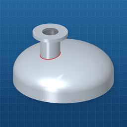
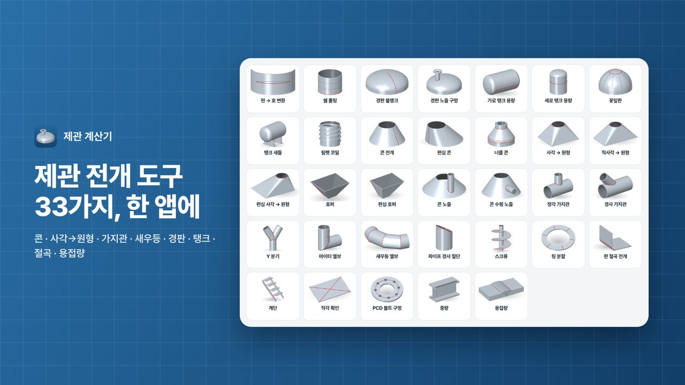
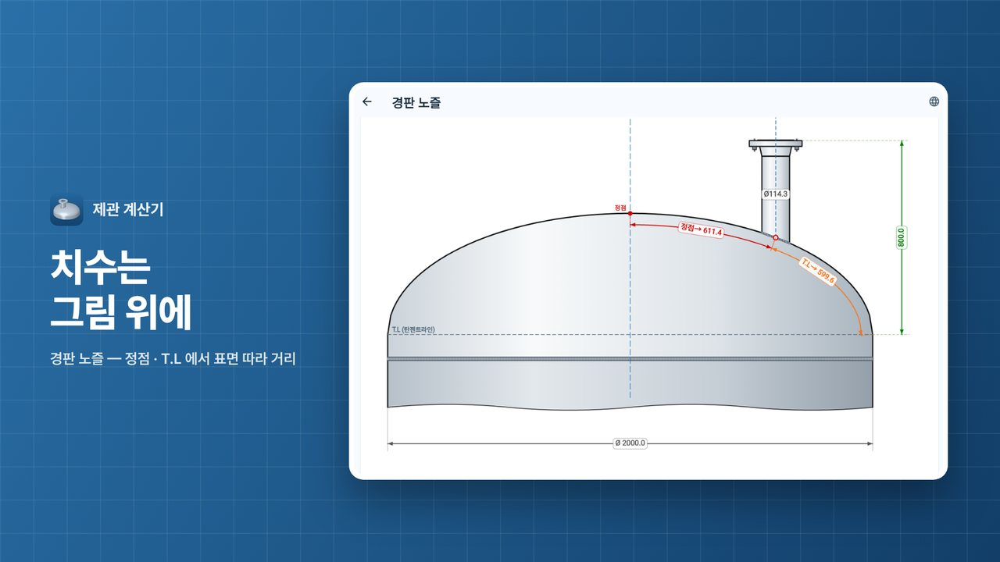
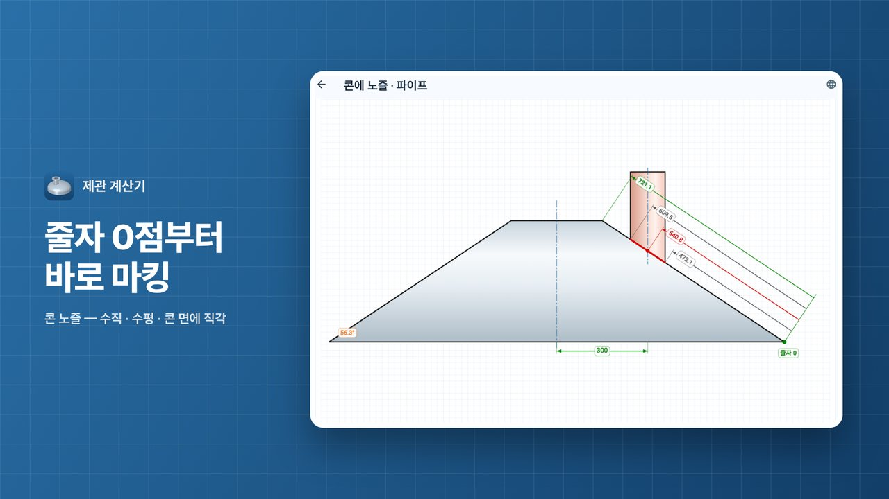
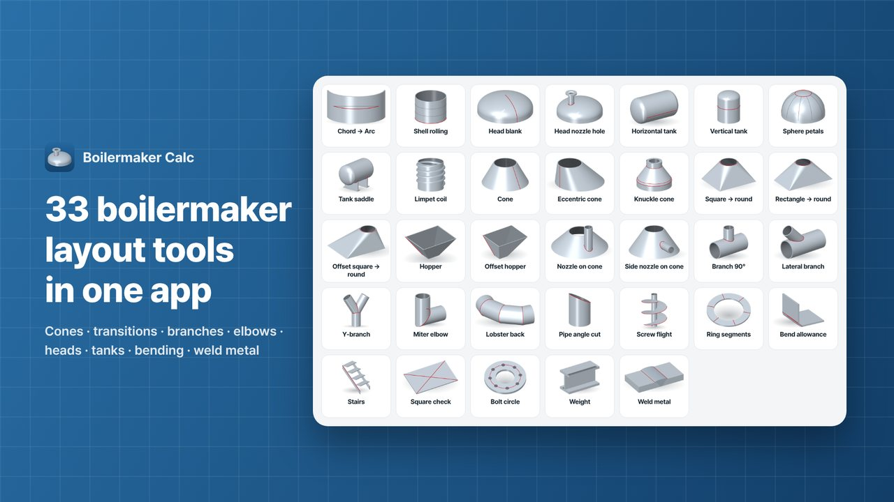
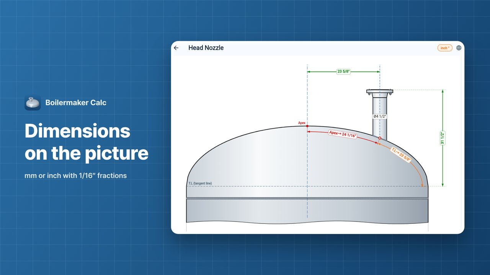
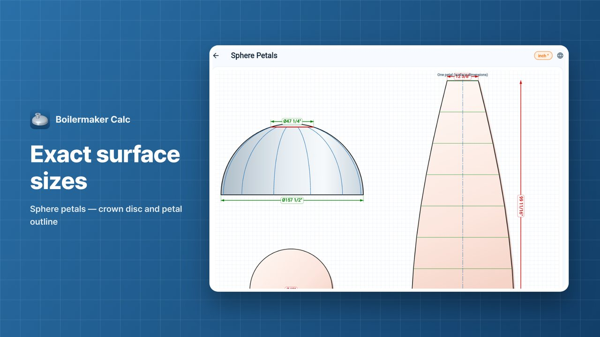

콘·레듀샤, 사각→원형, 가지관, 새우등, 경판, 탱크까지 제관 전개 도구 33가지를 한 앱에 담았습니다. 그림을 보고 고르면 판에 바로 그릴 수 있는 치수와 전개도가 나옵니다.
33 boilermaker layout tools in one app — cones and reducers, square to round, branches, lobster-back elbows, heads and tanks. Pick a tool by its picture and get dimensions and flat patterns you can mark straight onto the plate.






계산 값과 설정은 휴대폰 안에만 저장되며, 앱은 개인정보를 수집하거나 서버로 보내지 않습니다. 개인정보처리방침 읽기
Values and settings stay on your phone; the app collects no personal data and sends nothing to a server. Read the privacy policy